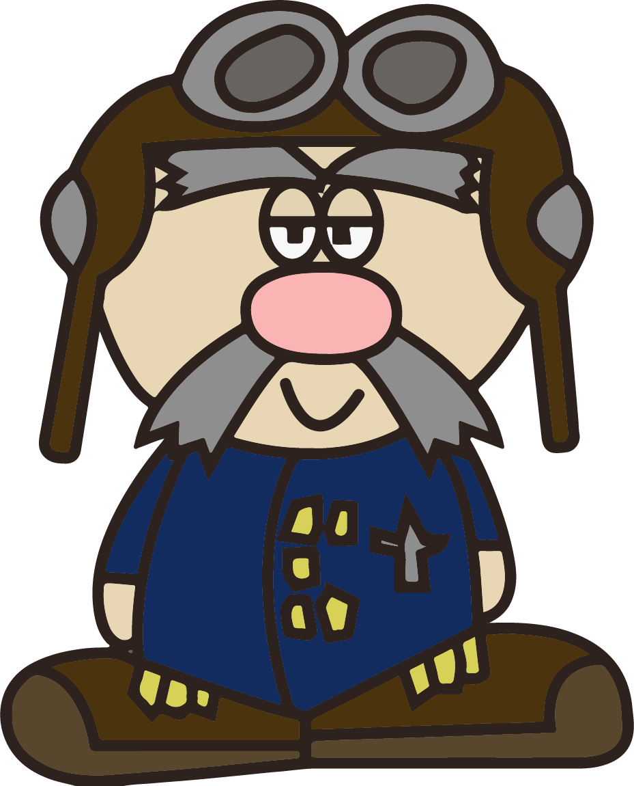
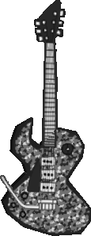
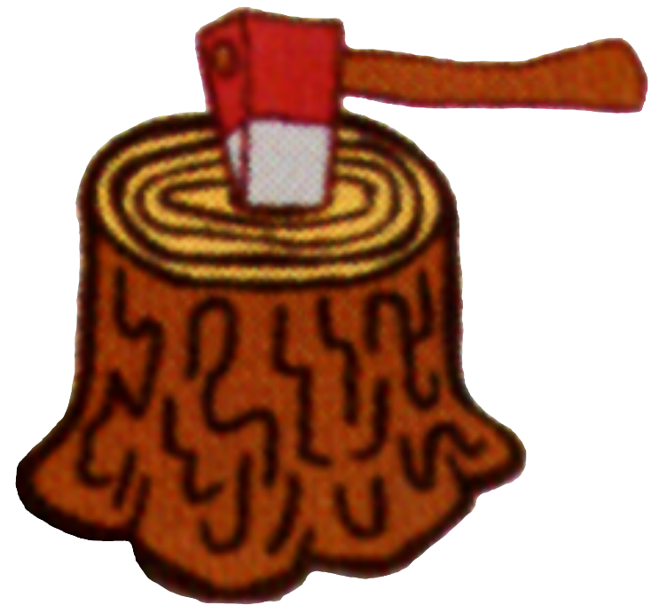

ENEN
JPJP


The Hip Hop Hero










★ PROMOTIONAL ITEMS ★★ プロモーションアイテム ★
Promotional items produced for PaRappa the Rapper that were never sold at retail. This includes store display standees, demo discs, promotional posters, staff T-shirts, retailer-exclusive items, and giveaways from events like Tokyo Game Show and E3. Many promotional items were produced in very limited quantities and were discarded after their promotional period, making survivors extremely rare. 小売店では販売されなかった、パラッパラッパーのプロモーションアイテムを紹介します。店頭用の等身大パネル・スタンド、体験版ディスク、販促ポスター、スタッフ用Tシャツ、小売店限定品、東京ゲームショウやE3といったイベントでの配布品などが含まれます。多くは非常に限られた数量だけが制作され、キャンペーン終了後は廃棄されたため、現存するアイテムは極めて希少です。
— PARAPPA THE RAPPER PRIZE-LOT BUNDLE —— パラッパラッパー プライズセット —

PaRappa the Rapper prize-lot bundle — red PaRappa beanie with black floppy ear flaps, a "100% Super Rap" metal tin coin bank, a character tambourine, flower-shaped castanets, and a pair of red/green maracas. All items are non-retail prize/promo pieces from the original 1996–1997 PS1 campaign.パラッパラッパーのプライズ／販促グッズ一式。垂れ耳付きの赤いパラッパビーニー、「100％ Super Rap」のブリキ製貯金箱、キャラクター柄のタンバリン、花形カスタネット、赤と緑のマラカスがセット。いずれも1996〜1997年のPS1初代キャンペーン時に配布された非売品です。

The prize-winner's notification letter shown together with its mailing envelope — the envelope on top is an official Sony Computer Entertainment envelope it was sent out in.当選通知の手紙と、それが届いた封筒。上に写っている封筒は、発送元であるソニー・コンピュータエンタテインメントの公式封筒。

The full congratulations letter from Sony Computer Entertainment's PaRappa & Promotion Planning Department, announcing the winner of the "PaRappa the Rapper Rhythm Tin" (リズム缶) giveaway and listing the tin's contents. Click the small document to the right of the scan to read a full English transcription.ソニー・コンピュータエンタテインメントパラッパ＆プロモーション企画部からの当選お祝いの手紙の全文。「パラッパラッパー リズム缶」プレゼントの当選を知らせ、缶の中身が記載されている。スキャン右側の小さな書類をクリックすると英訳全文が読めます。
— PARAPPA THE RAPPER —— パラッパラッパー —

"PaRappa Day" (パラッパの日) hand-waving flag — yellow plastic pennant on a white stick with PaRappa's face and the Sony logo, handed out at a Sony Computer Entertainment event tied to the PaRappa brand.「パラッパの日」の手持ち応援フラッグ。白い柄の付いた黄色いビニール旗にパラッパの顔とソニーロゴがあしらわれ、SCE主催のパラッパ関連イベントで配布されたもの。

Framed in-store promo poster for the "Super Jumbo Nuigurumi Chokin-bako" (Super Jumbo plush money banks) — a SEGA/TAKARA prize series featuring Sunny Funny, PaRappa, and PJ Berri in three types (全3種). Photographed at an Ontario video game exhibit.「スーパージャンボぬいぐるみ貯金箱」の店頭用販促ポスター。サニーファニー、パラッパ、PJベリーの全3種をラインナップしたセガ／タカラ製のプライズ景品用告知で、オンタリオのビデオゲーム展示会で撮影されたもの。

Red knit staff beanie with an embroidered frog patch on the cuff — a limited promo giveaway tied to PaRappa's in-game "frog" imagery, handed out to retail staff and event attendees rather than sold.カフス部分にカエルの刺繍ワッペンを配した赤のニットビーニー。パラッパ作中のカエルモチーフにちなんだ非売品の販促グッズで、店頭スタッフやイベント参加者向けに配布されたもの。

Plastic promotional tambourine with a yellow disc featuring PaRappa's face, his orange beanie, and the frog crest, plus the PaRappa the Rapper logo, PlayStation logo, and Sony Computer Entertainment mark. Marked ©1999 Sony Computer Entertainment Inc. / ©Rodney A. Greenblat / Interlink — NOT FOR SALE on the rim.プラスチック製の販促タンバリン。黄色いディスクにオレンジのビーニーをかぶったパラッパの顔とカエルのクレストをあしらい、パラッパラッパーロゴ、PlayStationロゴ、ソニー・コンピュータエンタテインメントのマークが入っています。縁には©1999 Sony Computer Entertainment Inc. ／ ©Rodney A. Greenblat ／ Interlink — NOT FOR SALEの表記。

Small wrist-strap tambourine prize with light-blue artwork featuring PaRappa, Sunny Funny, PJ Berri, and Katy Kat surrounded by Greenblat-style flowers and stars. Distributed as an event/prize giveaway tied to the original PaRappa campaign.手首にかけられるストラップ付きのミニタンバリン。水色のアートにはパラッパ、サニー・ファニー、PJベリー、ケイティ・キャットが描かれ、グリーンブラットらしいフラワーやスターのモチーフがあしらわれています。初代パラッパキャンペーンに合わせて配布されたイベント／プライズ景品。

Promotional vinyl shopping bag — front face with a large red panel and Rodney Alan Greenblat illustration of PaRappa holding a microphone, "PaRappa" logotype hand-lettered above. Handed out at retail tie-in events for the original PS1 release.販促用ビニールショッピングバッグ — 表面は赤いパネルにマイクを握ったパラッパのロドニー・アラン・グリーンブラットによるイラストが配置され、上部に「PaRappa」のロゴが手書き風にあしらわれています。PS1初代リリース時の店頭タイアップイベントで配布されたもの。

Reverse face of the same vinyl shopping bag — pink panel with the "Hip Hop Heroes!" tagline, an oversized PaRappa head silhouette, and a small running PaRappa illustration. Pairs with the red front face for a two-sided campaign giveaway.同じビニールショッピングバッグの裏面 — ピンクのパネルに「Hip Hop Heroes!」のキャッチコピー、大きなパラッパの顔のシルエット、走るパラッパの小さなイラストが配置されています。赤い表面と対になる両面仕様のキャンペーン配布品です。

Die-cut "vinyl record" promotional card for the TV anime PaRappa the Rapper, marked NOT FOR SALE. Centre label features the anime PaRappa with the PaRappa the Rapper logo, the 2001.4.14 on-air date, and the www.sonymusic.co.jp/parappa/ URL alongside NTV / Sony / CX-JVM credits. The black "record" surface is ringed with anime-design character cut-outs of Sunny Funny, Katy Kat, PJ Berri, Lammy, Ma-san, and Master Onion.TVアニメパラッパラッパーのレコード型ダイカット販促カード（NOT FOR SALE）。中央のラベルにはアニメ版パラッパとロゴ、2001.4.14のオンエア日、www.sonymusic.co.jp/parappa/のURL、NTV／ソニー／CX-JVMのクレジットが配置されています。ブラックの「レコード盤」面のまわりには、サニー・ファニー、ケイティ・キャット、PJベリー、ラミー、マーさん、タマネギ先生といったアニメ版キャラクターの切り抜きイラストが並びます。
— FAMITSU BROS. PAPERCRAFT SUPPLEMENT —— 月刊ファミ通ブロス 特別付録 ペーパークラフト —

Famitsu Bros. April issue, special supplement ② — "めざせCOOL!! アクションパラッパ!!" ("Aim for COOL!! Action PaRappa!!") die-cut papercraft sheet. Punch-out parts build a poseable PaRappa, with an assembly diagram and Lesson 1–4 button-timing charts ("strategy sheet music") along the bottom.月刊ファミ通ブロス4月号の特別付録②「めざせCOOL!! アクションパラッパ!!」。切り抜いて組み立てる可動パラッパのペーパークラフトシートで、作りかた図解とLesson 1〜4の攻略楽譜付き。

— PARAPPA THE RAPPER 2 —— パラッパラッパー2 —

Vertical in-store poster for PaRappa the Rapper 2 on PlayStation 2 — "やろうぜ、また、いっしょに！" ("Let's do it again, together!") with an 8.30 Release date and a first-come bonus offer for the "PaRappa Star Game Version" figure. Suggested retail ¥4,980.パラッパラッパー2（PlayStation 2）の縦長店頭ポスター。「やろうぜ、また、いっしょに！」のコピーと8.30発売告知、先着購入特典「パラッパスター Game Version」フィギュアのプレゼント案内が掲載。標準価格4,980円。
— PARAPPA THE RAPPER (PSP, 2006) —— パラッパラッパー（PSP・2006年） —

Tall in-store tower banner (26 × 72.5 cm) for the PaRappa the Rapper PSP port — "あの『パラッパラッパー』がついに PSP®「プレイステーション・ポータブル」にやってくる！" with the 2006年12月7日発売予定 release date, ¥3,980 tax-included / ¥3,790 tax-excluded pricing, a hero shot of the white PSP-2000 running the Chop Chop Master Onion stage, and a pre-order bonus dress-up sticker offer at the bottom.パラッパラッパー PSP移植版の縦長店頭タワーバナー（26×72.5cm）。「あの『パラッパラッパー』がついに PSP®「プレイステーション・ポータブル」にやってくる！」のキャッチコピーと2006年12月7日発売予定、希望小売価格 税込3,980円／税抜3,790円の表記、CHOP CHOPマスターオニオン面を映したホワイトPSP-2000のメインカット、下部には予約購入者特典のドレスアップステッカー告知が配置されています。

Upper-half detail of the same PSP tower banner — the PaRappa the Rapper bubble logo, the "元祖『音ゲー』" ("the original rhythm game") starburst flag, and the white PSP-2000 hero render with PaRappa fighting Chop Chop Master Onion in mid-stage gameplay.同じPSPタワーバナーの上部ディテール — パラッパラッパーのバブルロゴ、「元祖『音ゲー』」のスターバーストフラッグ、そしてChop Chopマスターオニオン面の途中をプレイ中のホワイトPSP-2000のメインレンダリングが大きく配置されています。

Lower-half detail of the same PSP banner — the standing PaRappa illustration with Sunny Funny in the corner, three feature inset cards covering Infrastructure-mode "PaRappa World" downloads, "10年前にPlayStation®でラップした人も今回初めてラップする人もハマること間違いなし!" callouts, Ad-Hoc multiplayer support, and a PaRappa cap, soda, and chips snack vignette at the foot.同じPSPバナーの下部ディテール — マイクを構えるパラッパのイラストと隅に並ぶサニー・ファニー、インフラストラクチャーモードの「パラッパワールド」ダウンロード、「10年前にPlayStation®でラップした人も今回初めてラップする人もハマること間違いなし!」、アドホックマルチプレイ対応を紹介する3つのフィーチャー枠、そして足元にあしらわれたパラッパ帽・ソーダ・チップスのスナックモチーフが描かれています。
— UM JAMMER LAMMY / MILKCAN —— ウンジャマ・ラミー ／ MilkCan —

Double-sided pink promotional coasters cross-plugging the Um Jammer Lammy PS1 game ("NOW ON SALE," SCPS-18011, ¥5,800) on one face and the MilkCan – Make it Sweet! debut album ("First Album 6.19 in store," SVWC 7031, ¥2,548) on the other. Handed out at record and game shops during the 1999 launch tie-in.ピンクの両面プロモコースター。片面はウンジャマ・ラミー（PS1、SCPS-18011、¥5,800）の「NOW ON SALE」告知、もう片面はMilkCan『Make it Sweet!』（SVWC 7031、¥2,548）の「First Album 6.19 in store」告知。1999年のゲーム＆CD同時展開時にレコード店やゲームショップで配布されたもの。

Metal tin lid from a MilkCan – Make it Sweet! promo canister, showing the band illustration (Lammy, Ma-san, Katy) over a psychedelic purple/orange background and the same "First Album 6.19 in store" campaign text. Distributed to press and retailers ahead of the album's release.MilkCan『Make it Sweet!』販促缶の金属製フタ。サイケデリックな紫／オレンジ背景にラミー、マーさん、ケイティのバンドイラストと「First Album 6.19 in store」のキャンペーン文字がプリントされ、アルバム発売前にプレスや小売店向けに配布されたもの。

Interior of the Um Jammer Lammy press kit tin, with the contents label still affixed: a mini puff, a cell-phone strap, and an MD+ case. Marked 非売品 (not for sale) and credited to SPE Visual Works' planning division.ウンジャマ・ラミープレスキット缶の内側。内容ラベルが貼られたままで、ミニパフ、携帯ストラップ、MD+ケースが同梱されていたことが分かる。非売品表記と、SPEビジュアルワークス企画制作第3部のクレジット入り。

Pair of round MilkCan – Make it Sweet! promotional flyers announcing the band's "long-awaited first album" on 6月19日 (June 19). The left disc carries the full 15-track listing (01. Let's Jam Together! / 02. Keep Your Head Up! / 04. Baby Baby! / 06. Fire Fire! …) and SVWC 7031 catalog info; the right disc cross-promotes the "Got to Move!" single clip.MilkCan『Make it Sweet!』の円形プロモチラシ2枚組。「待望のファーストアルバム 6月19日発売!!」を告知し、左には全15曲のトラックリスト（01. Let's Jam Together! / 02. Keep Your Head Up! / 04. Baby Baby! / 06. Fire Fire! ほか）とSVWC 7031の品番情報、右には「Got to Move!」シングルクリップの宣伝が掲載されています。

In-store poster for MilkCan – "Got to Move! (Millennium Girl)", the band's debut single (SVWD 9013, ¥816 tax in / ¥777 tax out) released 4.21 in store. Features the signature Rodney Alan Greenblat lineup of Lammy on guitar, Katy on bass, and Ma-san on the "M" bass drum, with the "Got to Move!" hook stacked vertically along the right edge.MilkCan「Got to Move!（Millennium Girl）」デビューシングル（SVWD 9013、税込¥816／税抜¥777、4.21 IN STORE）の店頭用ポスター。ロドニー・アラン・グリーンブラット描き下ろしのラミー（ギター）、ケイティ（ベース）、マーさん（Mのバスドラム）が並び、右端には「Got to Move! (Millennium Girl) Performed by Milk Can」の縦書きコピーが配置されています。

Plastic promotional tambourine companion to the PaRappa version — red disc with a large Lammy face print, the ウンジャマ☆ラミー Japanese logo, the PlayStation logo, and Sony Computer Entertainment mark. Marked ©1999 Sony Computer Entertainment Inc. / ©Rodney A. Greenblat / Interlink — NOT FOR SALE on the rim, distributed alongside the PaRappa tambourine for the 1999 UJL launch.パラッパ版とペアになるプラスチック製販促タンバリン。レッドのディスクにラミーの大きな顔がプリントされ、ウンジャマ☆ラミーの日本語ロゴ、PlayStationロゴ、ソニー・コンピュータエンタテインメントのマークが入っています。縁には©1999 Sony Computer Entertainment Inc. ／ ©Rodney A. Greenblat ／ Interlink — NOT FOR SALEの表記。1999年のUJL発売時にパラッパ版タンバリンと並んで配布されました。

"DataBookLive — Live at the Chop Chop Master Arena" bonus booklet bundled with Dengeki PlayStation's Um Jammer Lammy coverage — a tear-out, perforated MilkCan-themed strategy guide ("ココから切り取ってお読み下さい / 攻略読本") with the band lineup illustration, "Live at the Chop Chop Master Arena 6:00 PM" billing, and the Um Jammer Lammy logo across the cover.電撃PlayStationのウンジャマ・ラミー特集に綴じ込まれていた「DataBookLive — Live at the Chop Chop Master Arena」付録冊子。「ココから切り取ってお読み下さい／攻略読本」とミシン目で切り離して読むMilkCanテーマの攻略本で、バンドのラインナップイラストと「Live at the Chop Chop Master Arena 6:00 PM」のビリング、ウンジャマ・ラミーロゴが表紙にあしらわれています。
— RODNEY ALAN GREENBLAT EXHIBITION (PARCO GALLERY, 1998) —— ロドニー・A・グリーンブラット展（パルコギャラリー・1998年） —

Front face of the "New Studio Rodney — ロドニー・A・グリーンブラット展" exhibition poster, held at PARCO GALLERY (Nagoya PARCO West Building 7F) from 1998.3.13 (Fri) – 4.7 (Tue). Hero illustration shows Rodney's "Center for Advanced Whimsy" studio packed with PaRappa, Sunny Funny, and a roster of his original characters; lower stripe lists admission (¥500 general / ¥400 student) and the PARCO sponsor lineup including Sony Computer Entertainment, Sony Music, Apple Computer, and Interlink.「ニュースタジオ・ロドニー — ロドニー・A・グリーンブラット展」の表面ポスター。会期は1998年3月13日（金）〜4月7日（火）、会場はPARCO GALLERY（名古屋パルコ西館7F）。メインビジュアルにはパラッパやサニー・ファニーをはじめとするロドニー作品のキャラクターが集う「The Center for Advanced Whimsy」スタジオが描かれ、下段には入場料（一般¥500／学生¥400）や、ソニー・コンピュータエンタテインメント、ソニー・ミュージック、アップルコンピュータ、インターリンクなどのPARCO協賛社一覧が掲載されています。

Reverse face of the same flyer — yellow info side titled "ロドニー・A・グリーンブラット展" with three blocks of Japanese body copy describing Rodney's New York studio practice, his 1985 Whitney Biennial sculpture work, his role designing PaRappa the Rapper / Ugougo Lhuga / Ponkickys / Puffy CD jackets, and the scope of this large-scale solo show. Bottom panel pictures five installation views of the exhibition layout and an artist profile.同じフライヤーの裏面 — タイトル「ロドニー・A・グリーンブラット展」を冠した黄色のインフォメーション面。本文ではロドニーのニューヨークでのスタジオ活動、1985年ホイットニー・ビエンナーレでの彫刻出品、パラッパラッパー／ウゴウゴ・ルーガ／ポンキッキーズ／PUFFYのCDジャケット制作などのキャラクターデザイン経歴、そして本大型個展の概要を3ブロックで紹介。下部には展示レイアウトの設営カット5点と作家プロフィールが掲載されています。